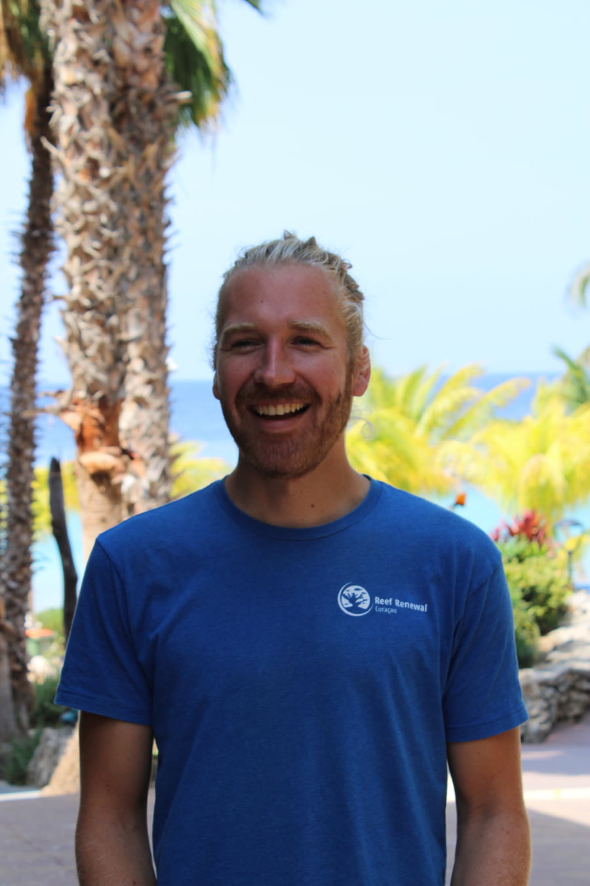

Jeroen Schneider
Reef Renewal Foundation Curaçao
Works on the ground in Curaçao, where Reef Renewal grows and outplants coral to help local reefs recover.
Jeroen Schneider
Reef Renewal Foundation Curaçao

Free access
Jeroen joins Dr. Emma George, Co-founder and COO of Wholome Arks, for an inside look at the work behind a living reef. Register once and the recording opens right away.
See what it takes to grow coral from a larva the size of a sesame seed and return it to the sea.
Learn what each structure is built to do, and where each one fits in a restoration program.
Hear how protected habitat can give a struggling species a better chance.
Get an honest look at what restoration costs and who pays — the question we take on in Webinar Nº 02.
Reef Renewal Foundation Curaçao
Works on the ground in Curaçao, where Reef Renewal grows and outplants coral to help local reefs recover.
Co-founder & COO, Wholome Arks
Leads field deployments and ecotourism partnerships, and hosts the Wholome Arks webinar series.
Up next | Webinar Nº 02
Live on YouTube in the last week of October. Save your seat and bring your questions.